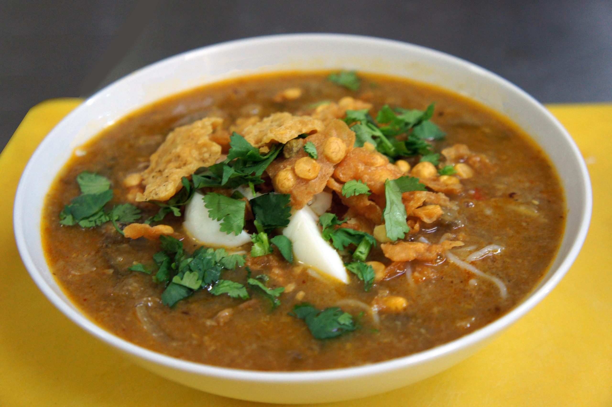

Home Page
Mohinga

Mohinga, the Burmese fish noodle
Mohinga is the national dish of Myanmar and is a traditional
fish-based noodle soup that is usually enjoyed for breakfast
but can be eaten any time of day. It features a flavorful broth made
from fish, lemongrass, ginger, garlic, onions, and spices like turmeric,
and is served with rice noodles and a variety of toppings such as boiled egg,
cilantro, crispy fried onions, lime, and sometimes fried fritters or banana stem.
Mohinga is commonly found at street stalls and is loved for its savory, hearty,
and aromatic qualities.
Ingredients
- Catfish or other freshwater fish (e.g., Mrigal carp, trout, or seabass)
- Lemongrass
- Turmeric
- Garlic
- Shallots or onions
- Ginger
- Fish sauce and/or fish paste (shrimp paste in some recipes)
Steps
- Make an aromatic paste by pounding lemongrass, garlic, ginger, and onions.
- Sauté the paste in oil until fragrant, then add turmeric and fish sauce.
- Add water and fish (such as catfish or seabass) and simmer until cooked.
- Remove the fish, flake it, and return it to the pot.
- Stir in toasted rice flour and chickpea flour to thicken the soup.
- Cook rice noodles separately.
- Assemble by pouring hot soup over noodles and top with optional garnishes like boiled egg, lime, cilantro, and crispy fried onions.